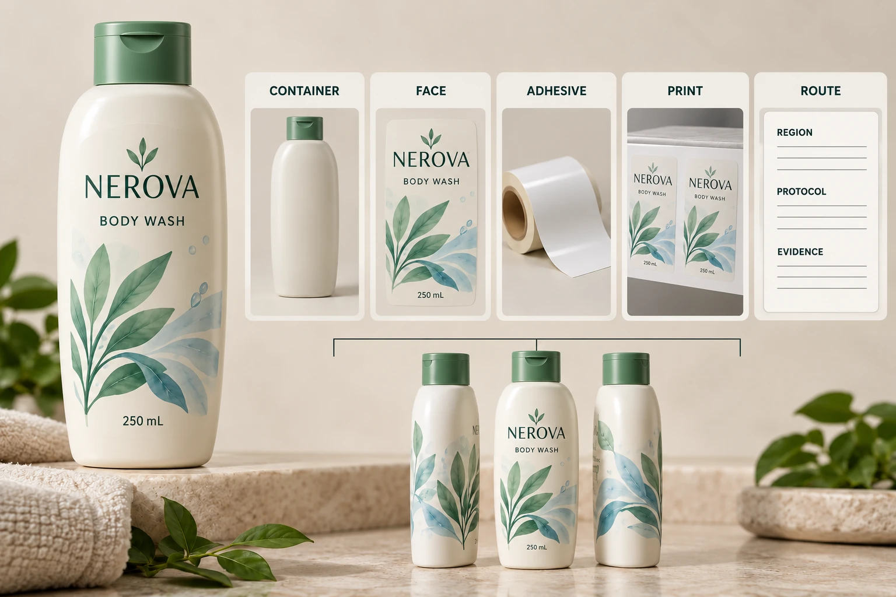

Identify the actual combination
Record the bottle supplier's material and relevant construction information, dimensions and decoration. Identify the label face, adhesive, print, protective layers and applied coverage. Ask the relevant assessment party which additional packaging details it requires, including other attached components.
UPM Adhesive Materials' circularity overview describes label compatibility in relation to the packaging recycling process and notes that face material, adhesive and coverage matter. It also distinguishes market guidance. That supports a construction-specific inquiry, rather than a universal rule for every label on HDPE.
Obtain the actual references, not just descriptions such as eco film or recycling adhesive. The commercial quote and the material evidence need to identify the same proposed combination.
Read what recognition actually covers
Avery Dennison's HDPE recognition announcement concerns specified film-label constructions paired with hot-melt adhesives. It is an example of construction-linked evidence, not recognition of every product with those broad material names.
If a supplier cites a recognition or test, request the relevant reference and its current scope. Match the product identity, combination, stated conditions and any limitations with the job. Ask the responsible technical party to resolve differences instead of assuming a similar adhesive name is sufficient.
Do not imply that YT Labels or the illustrated pack holds that recognition. A manufacturer's announcement can explain the kind of question to ask while leaving the proposed supply unconfirmed.
Distinguish design compatibility from collection
Compatibility with a defined technical recycling process is a different question from whether a consumer's local system collects and sorts the finished pack. An assessment must be used within its stated geographical and technical scope.
Keep US, GB, CA and AU questions separate when a brand serves all four markets. Do not copy a technical reference from one system into a universal local-disposal instruction. Have the responsible brand and assessment parties determine the appropriate current evidence and wording for each intended market.
The removal guide addresses a separate operating function. A label that can be removed under one agreed process has not automatically demonstrated a recycling outcome or a consumer collection instruction.
Use a claim-scope record
This worksheet is an evidence handoff. It supplies no recycling eligibility threshold, required test or permission to use an environmental mark.
| Item | Evidence to connect | Question before release |
|---|---|---|
| Container | Actual supplier construction and dimensions | Does the evidence concern this pack? |
| Label | Face, adhesive, print and finish references | Is the complete proposed combination identified? |
| Application | Coverage and relevant attached components | Are the assessed conditions represented? |
| Technical route | Current protocol or assessment reference | What recycling process and region are addressed? |
| Supporting result | Identified report or recognition and limitations | What was actually evaluated? |
| Market context | Applicable collection/sorting assessment | What remains outside technical compatibility? |
| Wording | Proposed claim, component and responsible reviewer | Does the statement stay within the evidence? |
| Change | Revised component or supply reference | Which part of the review must reopen? |
Start with the exact pack and label. Request the relevant evidence, have the technical owner reconcile scope differences and route the proposed claim to the responsible brand reviewer. Keep unsupported wording pending even if ordinary artwork layout can continue.

Let an evidence gap change the brief
One hypothetical project has a current assessment that covers its exact combination and defined market context. Its next task is to preserve that connection in purchasing and artwork review, including what happens if the material changes.
Another has only a generic bottle-resin statement and a film-label brochure. It can still request constructions and evidence for evaluation, but it should not treat that starting information as a completed claim review. A different label proposal or a narrower supported statement may be appropriate after the relevant review.
Keep production waste separate too. The release-liner collection guide concerns spent backing at the application site. That route does not establish what happens to the consumer's HDPE bottle, and a bottle assessment does not tell the factory where to send its liner.
For cosmetic bottle labels, send the container reference, label coverage, artwork, quantity and intended markets. State the exact claim or compatibility question and request documented options available for review. Use the form to draft a message; send supporting records separately by email or WhatsApp. Approve wording only after the responsible parties can connect it to the actual pack.